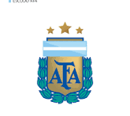
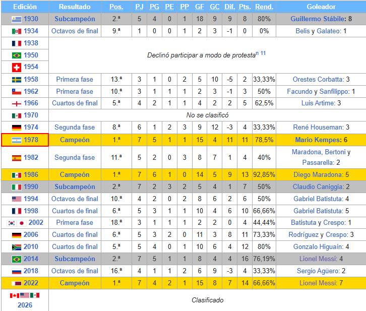

Argentina

Datos rápidos
Nombre: Selección Argentina de fútbol
Asociación: Asociación del Fútbol Argentino (AFA)
Confederación: CONMEBOL
Primer partido: 20 de julio de 1902
Introducción
La selección masculina de fútbol de Argentina es el equipo formado por jugadores de nacionalidad argentina que representa a la Asociación del Fútbol Argentino (AFA) en las competiciones oficiales organizadas por la Confederación Sudamericana de Fútbol (Conmebol) y por la Federación Internacional de Fútbol Asociación (FIFA).
Es campeona vigente a nivel confederativo, interconfederativo y mundial.
Disputó su primer partido internacional, que ganó por 6 a 0 contra Uruguay, el 20 de julio de 1902, en la ciudad de Montevideo.
Este es reconocido por FIFA, AFA y AUF como el primer partido oficial de ambas selecciones.
Es considerada como una de las grandes potencias del fútbol masculino internacional y una de las selecciones más importantes de la historia.
Historia
El 20 de julio de 1902 disputó su primer partido oficial ante Uruguay, en Montevideo, con triunfo 6-0. En Buenos Aires jugó por primera vez el 13 de septiembre de 1903 ante el mismo rival, y perdió 2-3.
Durante sus primeros años de existencia, el equipo nacional jugó solo partidos amistosos hasta 1905, cuando se celebró la primera edición de la Copa Lipton.
Fue una copa organizada por las asociaciones de fútbol argentino y uruguayo, cuya última edición fue disputada en 1992.
El primer título oficial ganado por Argentina fue en 1906, derrotando a Uruguay 2-0 en Montevideo.
Ese mismo año, Argentina también jugó la Copa Newton, otra competencia organizada por ambas asociaciones, ganando el trofeo tras vencer a Uruguay 2-1 en Buenos Aires.
En los años siguientes, Argentina disputaba partidos solamente contra equipos sudamericanos.
Mundiales
La selección argentina ha participado en numerosas ediciones de la Copa Mundial de la FIFA y es una de las selecciones más importantes de la competición.
Argentina consiguió títulos mundiales y se convirtió en una de las grandes potencias del fútbol internacional.
